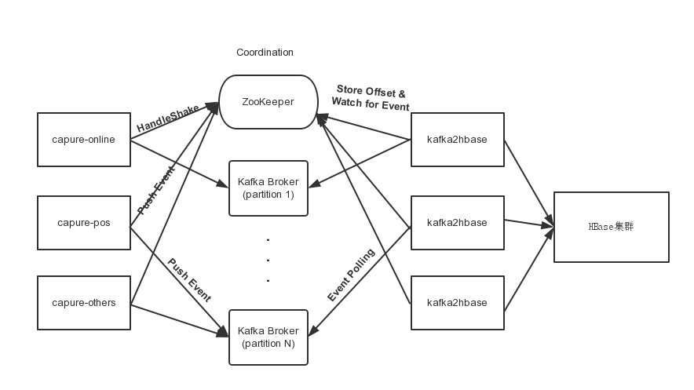
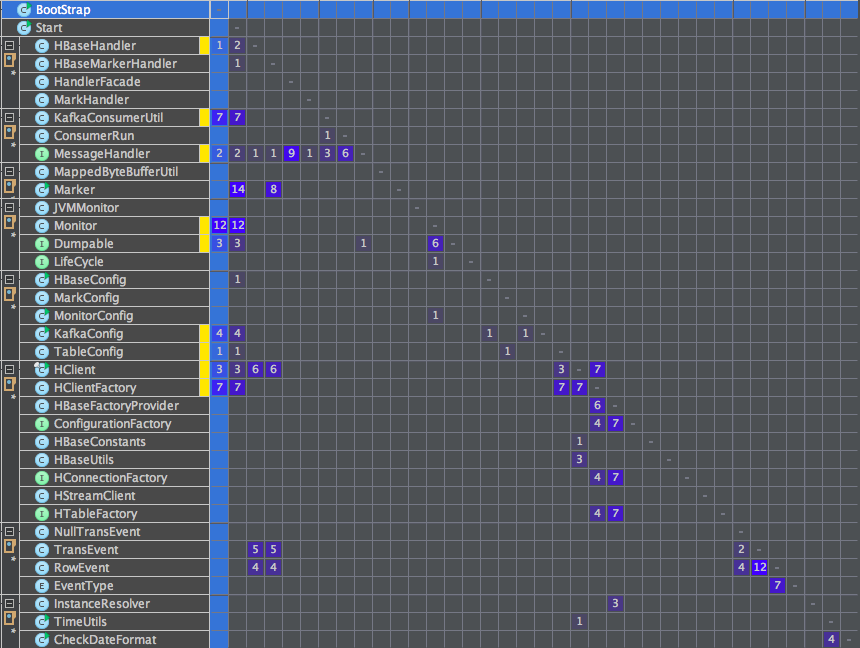

Kafka2HBase设计概要
Table of Contents
前言
Kafka2HBase目的就是将Kafka的数据实时写到HBase。
这很简单，作为基础数据平台，再此强调数据准确，实时等特点，因此有几点还是说下比较好.
比如:
- 如何利用高效的内存映射文件实现数据存储和准确性等.
- Streaming-Style HBase客户端封装.
- 实时应用程序内部变量监控等.
kafka2hbase设计概要：基本概念和术语
kafka相关
- 消息，全称为Message，是指在生产者、服务端和消费者之间传输数据。
- 消息代理：全称为Message Broker，通俗来讲就是指该MQ的服务端或者说服务器。
- 消息生产者：全称为Message Producer，负责产生消息并发送消息到meta服务器。
- 消息消费者：全称为Message Consumer，负责消息的消费。
- 消息的主题：全称为Message Topic，由用户定义并在Broker上配置。producer发送消息到某个topic下，consumer从某个topic下消费消息。
- 主题的分区：也称为partition，可以把一个topic分为多个分区。每个分区是一个有序，不可变的，顺序递增的commit log
- 消费者分组：全称为Consumer Group，由多个消费者组成，共同消费一个topic下的消息，每个消费者消费部分消息。这些消费者就组成一个分组，拥有同一个分组名称,通常也称为消费者集群
- 偏移量：全称为Offset。分区中的消息都有一个递增的id，我们称之为Offset。它唯一标识了分区中的消息。
hbase相关
- 行键：行键在数据行在表里的唯一标识, 并作为检索记录的主键
- 列族与列：列表示为<列族>:<限定符>
- 时间戳：对应每次数据操作的时间, 可由系统自动生成, 也可以由用户显示的赋值
- Region和Region服务器
- HRegionServer一个HRegionServer可以管理多个Region实例
- Hmaster作为总控节点
- Zookeeper负责调度
- HLog 用于灾难恢复
- HBase中有两张特殊的Table, -ROOT- 和 .META.
- .META. : 记录了用户表的Region信息, .META. 可以有多个region
- -ROOT- : 记录了 .META. 表的Region信息, -ROOT- 只有一个region
- Zookeeper中记录了 -ROOT- 表的location
kafka2hbase相关
- markLog 利用内存映射文件实现数据结构size=1的栈，保证数据可靠性
- HClient Streaming-Style HBase客户端Java版本封装
- monitor 对外暴露实时监控端口
kafka2hbase设计概要：基本工作机制
数据同步架构示意图以及kafka2hbase所处角色

Figure 1: 此图表示了kafka2hbase在实时同步所处的角色
PS : 从上图可以看出，kafka2hbase的角色为kafka的消费者，在此我们使用kafka的高级API，将所有的消息偏移，即offset维护在zookeeper。
工程概要及设计思想
设计思想
工程以数据为中心而非程序为中心，程序负责逻辑处理。[是不是感觉说和没说一样:P]
monitor[监控程序]
|
[将kafka中json形式 v
msg拉取到内存] [解析json为HBase操作GRUD]
Kafka高级API <------------------------- Handler -------------------------------> HClient
| [实时将数据写入HBase]
| [通过内存映射文件，实时刷新消息]
v
marker
[update current msg]
保证数据准确性 Marker
保存数据准确性，其实无非就是缓存下当前正在处理的数据。 在上图中，我们的capture使用了内部的一个持久化队列hazelcast。 有2个目的：
- 持久化信息，在程序挂掉等情况下，仍然不会丢消息
- 释放db2MQ的存储压力
在kafka2hbase中，我们只需要使用考虑不丢失消息这个问题。因为kafka的本身可以看作持久化队列，同时可以缓存至少一周的数据。
所以我们选择利用内存映射文件实现数据结构size=1的栈，保证数据可靠性。
实现这样一个持久化数据结构很简单,文件的存储比较有特色，采用MappedByteBuffer做文件读写，MappedByteBuffer是java nio引入的文件内存映射方案，读写性能极高，
数据结构定义
import org.apache.log4j.Logger;
import java.io.File;
import java.io.IOException;
import java.io.RandomAccessFile;
import java.lang.reflect.Method;
import java.nio.MappedByteBuffer;
import java.nio.channels.FileChannel;
import java.security.AccessController;
import java.security.PrivilegedAction;
/**
* @author Jerry Deng
*/
public class Marker {
private static final Logger LOGGER = Logger.getLogger(Marker.class);
private static final int DEFAULT_FILE_LIMIT_LENGTH = 1024 * 1024 * 40;
private String fileName;
private RandomAccessFile dbRandFile;
private FileChannel fc; // = dbRandFile.getChannel();
private MappedByteBuffer mappedByteBuffer;
private File file;
private boolean isFirstNull;
/**
* Constructor
*/
public Marker(String fileName) throws IOException {
this.fileName = fileName;
file = new File(fileName);
if (file.exists() == false) { // 文件不存在，创建文件
isFirstNull = true;
createLogEntity();
} else {
dbRandFile = new RandomAccessFile(fileName, "rwd");
fc = dbRandFile.getChannel();
mappedByteBuffer = fc.map(FileChannel.MapMode.READ_WRITE, 0, this.DEFAULT_FILE_LIMIT_LENGTH);
isFirstNull = false;
}
}
public void put(String msg) {
if (msg == null) {
throw new RuntimeException("msg is null");
}
mappedByteBuffer.position(0);
mappedByteBuffer.putInt(msg.getBytes().length);
mappedByteBuffer.position(4);
mappedByteBuffer.put(msg.getBytes());
}
public String get() {
mappedByteBuffer.position(0);
byte[] b = new byte[mappedByteBuffer.getInt()];
mappedByteBuffer.position(4);
mappedByteBuffer.get(b);
return new String(b);
}
public int getLength() {
mappedByteBuffer.position(0);
return mappedByteBuffer.getInt();
}
public boolean isFirstNull() {
return isFirstNull;
}
public void close() {
try {
mappedByteBuffer.force();
AccessController.doPrivileged(new PrivilegedAction<Object>() {
public Object run() {
try {
Method getCleanerMethod = mappedByteBuffer.getClass().getMethod("cleaner", new Class[0]);
getCleanerMethod.setAccessible(true);
sun.misc.Cleaner cleaner = (sun.misc.Cleaner) getCleanerMethod.invoke(mappedByteBuffer,
new Object[0]);
cleaner.clean();
} catch (Exception e) {
LOGGER.error("close logindexy file error:", e);
}
return null;
}
});
fc.close();
dbRandFile.close();
mappedByteBuffer = null;
fc = null;
dbRandFile = null;
} catch (IOException e) {
LOGGER.error("close logindex file error:", e);
}
}
private boolean createLogEntity() throws IOException {
if (file.createNewFile() == false) {
return false;
}
dbRandFile = new RandomAccessFile(file, "rwd");
fc = dbRandFile.getChannel();
mappedByteBuffer = fc.map(FileChannel.MapMode.READ_WRITE, 0, this.DEFAULT_FILE_LIMIT_LENGTH);
mappedByteBuffer.force();
return true;
}
}
使用方式方式
// 定义对象 MaKer marker = new Marker(FILE_NAME); // 处理消息 if (!marker.isFirstNull() && marker.getLength() != 0) { handle(hClientMap).handler(marker.get()); } // 更新消息 marker.put(msg); // 记得释放资源啊，堆外资源 marker.close();
释放资源
关闭资源用到了个技巧，主要是堆外资源的释放应该这样做：
/** * 关闭索引文件 */ public void close() { try { mappedByteBuffer.force(); AccessController.doPrivileged(new PrivilegedAction<Object>() { public Object run() { try { Method getCleanerMethod = mappedByteBuffer.getClass().getMethod("cleaner", new Class[0]); getCleanerMethod.setAccessible(true); sun.misc.Cleaner cleaner = (sun.misc.Cleaner) getCleanerMethod.invoke(mappedByteBuffer, new Object[0]); cleaner.clean(); } catch (Exception e) { log.error("close logindexy file error:", e); } return null; } }); fc.close(); dbRandFile.close(); mappedByteBuffer = null; fc = null; dbRandFile = null; } catch (IOException e) { log.error("close logindex file error:", e); } }
这样做设计的好处是，无论你程序因为被kill还是非正常jvm退出等，都不会丢消息，都被合理的保存在文件中，在下次启动的时候，启动从上次数据处开始。
Streaming-Style HBase客户端封装 HClient
对于hbase客户端，采用streaming-style的接口风格封装HBase客户端.
DEMO:
// demo HClient hClient = HClientFactory.builder().connectString("zookeeper1, zookeeper2, zookeeper3").table("tableName".getBytes()).build();
监控 Monitor
在程序启动后，除了使用jstack， jmap等查看程序启动堆栈，内存信息外。
如何有效的查看程序内部变量信息，甚至在Runtime修改变量，如动态更改日志级别等。
简单介绍下kafka2hbase的实现方式（，当然还有很多好的方式，私下可mail我zhuyu.deng@yeepay.com告诉你，哈哈.）
首先定义接口,凡是实现这个接口的表示可被监控的。
import java.io.IOException;
/**
* @author Jerry
*/
public interface Dumpable {
String dump();
void dump(Appendable out, String indent) throws IOException;
}
所有需要被监控的对象都实现这个接口， 比如HBaseHandler需要被实时监控.
则把所有需要被监控的信息在dump(Appendable out, String indent)中追加到 append
import org.jerry.bigdatakafka2hbase.hclient.hbase.HClient; import org.jerry.bigdatakafka2hbase.kafka.MessageHandler; import org.jerry.bigdatakafka2hbase.parser.RowEvent; import org.jerry.bigdatakafka2hbase.parser.TransEvent; import org.apache.log4j.Logger; import org.codehaus.jackson.map.ObjectMapper; import java.io.IOException; import java.util.Map; public class HBaseHandler implements Dumpable { private static final Logger LOGGER = Logger.getLogger(HBaseHandler.class); private static final ObjectMapper objectMapper = new ObjectMapper(); private final Map<String, HClient> hClientMap; public HBaseHandler(Map<String, HClient> hClientMap) { this.hClientMap = hClientMap; } private String currentMsg; private int currentRowEventSize; public void handler(String message) throws IOException { currentMsg = new String(message); TransEvent transEvent = objectMapper.readValue(message, TransEvent.class); currentRowEventSize = transEvent.getRowEvents().size(); for (RowEvent rowEvent : transEvent.getRowEvents()) { String table = rowEvent.getTableName(); Map<String, String> afterVals = rowEvent.getAfterValues(); if (LOGGER.isDebugEnabled()) { LOGGER.debug("afterVal : " + afterVals); LOGGER.debug("table : " + table); } try { HClient hClient = hClientMap.get(table); if (hClient == null) { if (LOGGER.isDebugEnabled()) { LOGGER.info("hclient is null : " + table); } return; } hClient.putRow(afterVals); } catch (Exception e) { e.printStackTrace(); LOGGER.error("hbase put error : " + e); } } } @Override public String dump() { return null; } @Override public void dump(Appendable out, String indent) throws IOException { out.append("------------------------------------------------------------------------------------------\n"); out.append("hbase handler : " + currentMsg + "\n"); out.append("hbase handler : " + currentRowEventSize + "\n"); out.append("------------------------------------------------------------------------------------------\n"); } }
- 所有实现了Dumpable接口的对象，最终都会被add到这个Monitor中。
于是，我们在启动程序的时候就会对外暴露一个接口，安全起见，现在只对外提供只读权限。
你就可以看到所有内部变量，对你自己的程序了如指掌。
import com.yeepay.bigdatakafka2hbase.config.MonitorConfig; import org.slf4j.Logger; import org.slf4j.LoggerFactory; import java.io.BufferedReader; import java.io.IOException; import java.io.InputStreamReader; import java.io.PrintStream; import java.net.ServerSocket; import java.net.Socket; import java.util.List; import java.util.concurrent.CopyOnWriteArrayList; /** * @author Jerry */ public class Monitor extends Thread implements LifeCycle { private static final Logger LOGGER = LoggerFactory.getLogger(Monitor.class); private static int DEFAULT_LISTENING_PORT = Integer.parseInt(MonitorConfig.getMonitorConfig().get("port")); // 在线 private List<Dumpable> list = new CopyOnWriteArrayList<Dumpable>(); protected int serverPort = DEFAULT_LISTENING_PORT; private ServerSocket serverSocket; public Monitor() { } public Monitor(int port) { serverPort = port; } public void addMonitored(Dumpable m_) { list.add(m_); } public void run() { try { serverSocket = new ServerSocket(serverPort); } catch (IOException e) { LOGGER.error("cannot create server socket on port " + serverPort, e); return; } while (true) { Socket socket; try { socket = serverSocket.accept(); } catch (IOException e) { LOGGER.error("cannot accept socket", e); return; } try { String line; BufferedReader reader = new BufferedReader(new InputStreamReader(socket.getInputStream())); PrintStream out = new PrintStream(socket.getOutputStream()); while ((line = reader.readLine()) != null) { if (line.startsWith("p")) { for (Dumpable m : list) { m.dump(out, "------------\n"); } } } socket.close(); } catch (Throwable e) { LOGGER.error(e.getMessage(), e); } } } public void destroy() { if (serverSocket != null) { try { serverSocket.close(); } catch (IOException e) { e.printStackTrace(); } } LOGGER.info("monitor stoped at : " + System.currentTimeMillis()); } }
工程结构（基于maven）
--------------------------------------------------------------------源码树----------------------
com
└── yeepay
└── bigdatakafka2hbase
├── BootStrap.java
├── Start.java
├── config
│ ├── HBaseConfig.java
│ ├── KafkaConfig.java
│ ├── MarkConfig.java
│ ├── MonitorConfig.java
│ └── TableConfig.java
├── handler
│ ├── HBaseHandler.java
│ ├── HBaseMarkerHandler.java
│ ├── HandlerFacade.java
│ └── MarkHandler.java
├── hclient
│ ├── ConfigurationFactory.java
│ ├── HBaseConstants.java
│ ├── HBaseFactoryProvider.java
│ ├── HClient.java
│ ├── HClientFactory.java
│ ├── HConnectionFactory.java
│ └── HTableFactory.java
├── kafka
│ ├── ConsumerRun.java
│ ├── KafkaConsumerUtil.java
│ └── MessageHandler.java
├── mark
│ ├── MappedByteBufferUtil.java
│ └── Marker.java
├── monitor
│ ├── Dumpable.java
│ ├── JVMMonitor.java
│ ├── LifeCycle.java
│ └── Monitor.java
├── parser
│ ├── EventType.java
│ ├── NullTransEvent.java
│ ├── RowEvent.java
│ └── TransEvent.java
└── utils
└── InstanceResolver.java

Figure 2: 此图表示了各个类之间的依赖关系
--------------------------------------------------------------------package 树----------------------
readme:
1. 配置你的kakfa信息，写明zookeeper地址，group, topic. kafka.properties
2. 配置hbase信息， 写明zookeeper（不一定与kafka同一个zookeeper）hbase.properties
3. 配置需要同步到hbase的表 tbl.config
4. 配置监控端口 monitor.properties
5. 程序启动：nohup ./start &
├── bin
│ ├── mark-test.sh
│ └── start.sh
├── conf
│ ├── core-site.xml
│ ├── hbase-site.xml
│ ├── hbase.properties
│ ├── hdfs-site.xml
│ ├── kafkaconfig.properties
│ ├── monitor.properties
│ └── tbl.config
└── lib
├── async-1.3.1.jar
├── cloudera-jets3t-2.0.0-cdh4.6.0.jar
├── commons-collections-3.2.1.jar
├── commons-compress-1.4.1.jar
├── jackson-mapper-asl-1.8.8.jar
├── jackson-mapper-lgpl-1.9.13.jar
├── jackson-xc-1.8.8.jar
├── jamon-runtime-2.3.1.jar
├── kafka-clients-0.8.2.0.jar
├── kafka2hbase-1.0-SNAPSHOT.jar
├── kafka_2.10-0.8.2.0.jar
├── kfs-0.3.jar
├── libthrift-0.9.0.jar
├── log4j-1.2.17.jar
├── log4j-over-slf4j-1.7.2.jar
├── protobuf-java-2.4.0a.jar
├── slf4j-api-1.7.2.jar
├── slf4j-log4j12-1.7.2.jar
├── .
├── .
├── .
├── zkclient-0.3.jar
└── zookeeper-3.4.5-cdh4.6.0.jar
参考
kafka设计
zookeeper设计